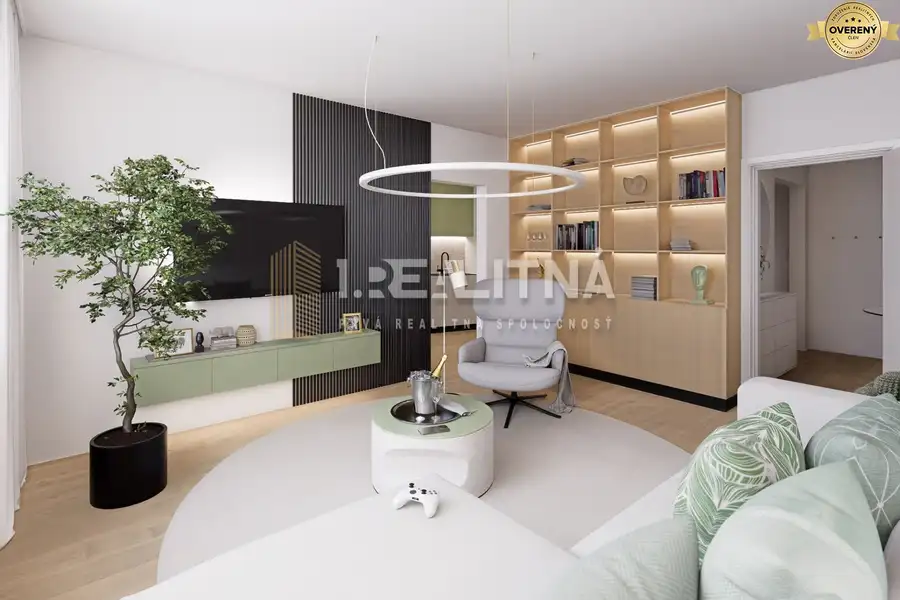
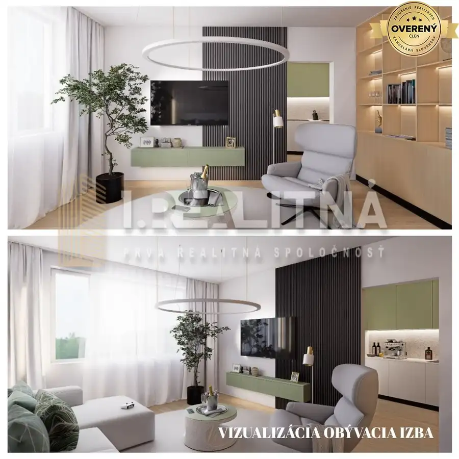
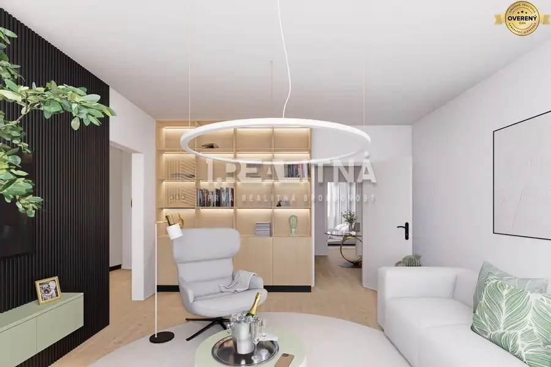
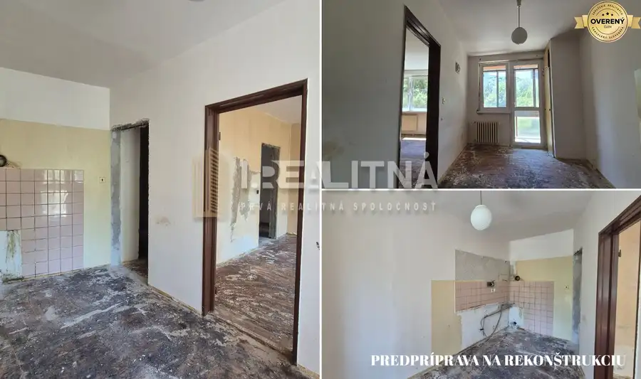
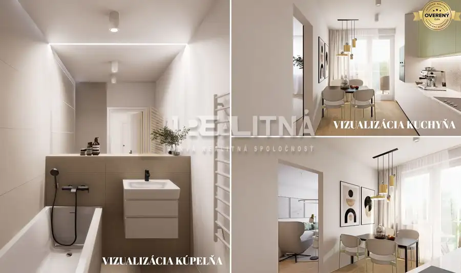
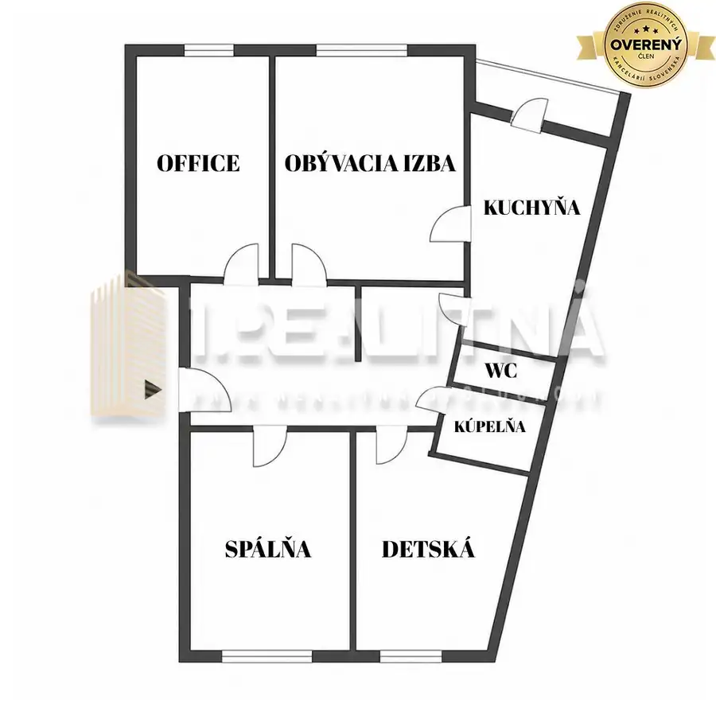
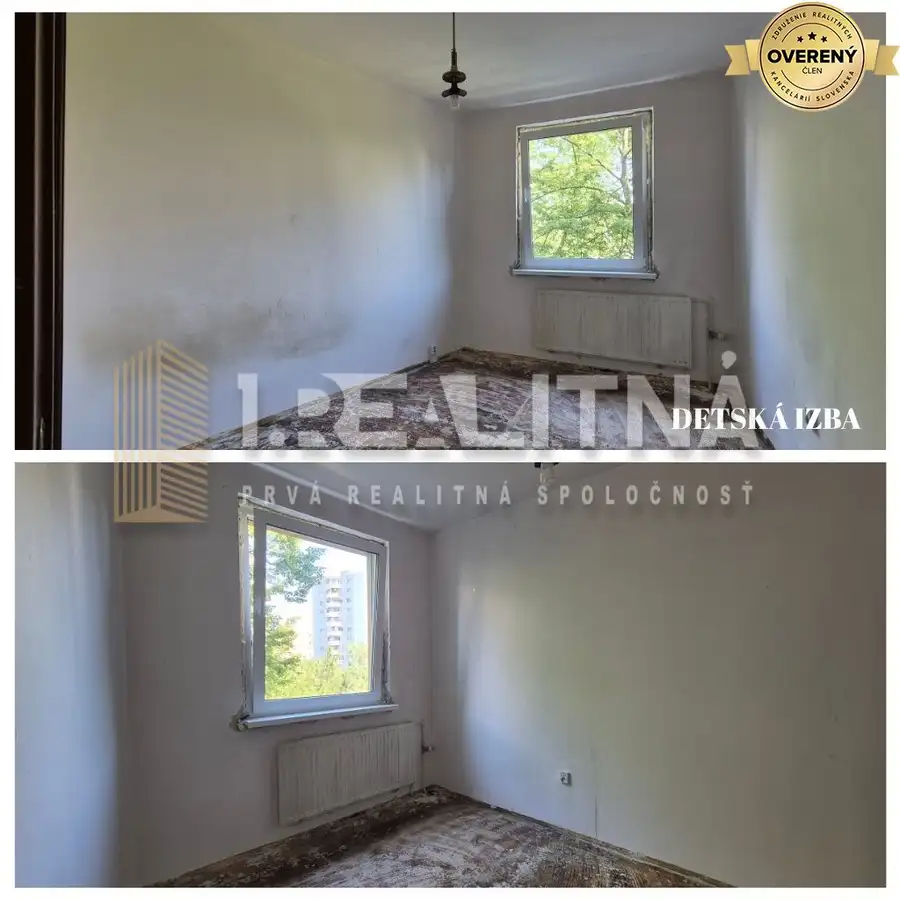
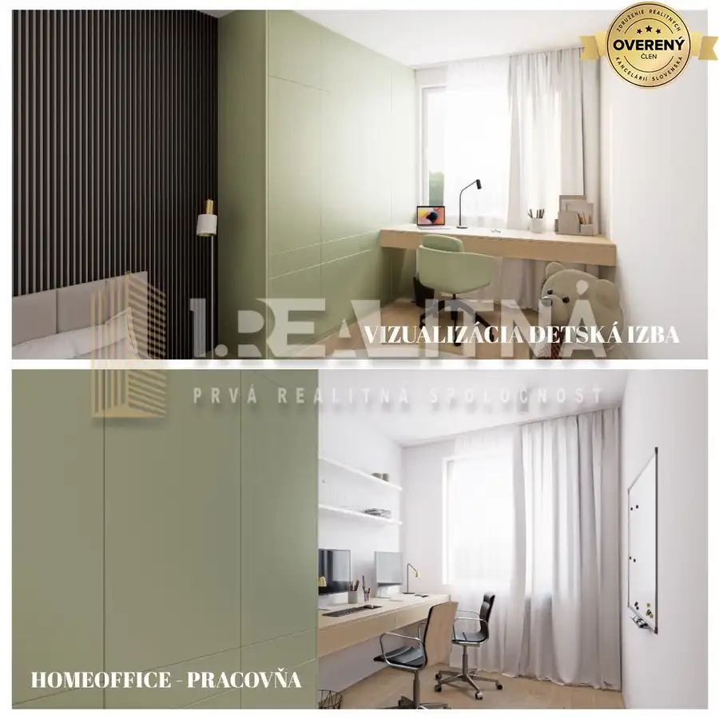
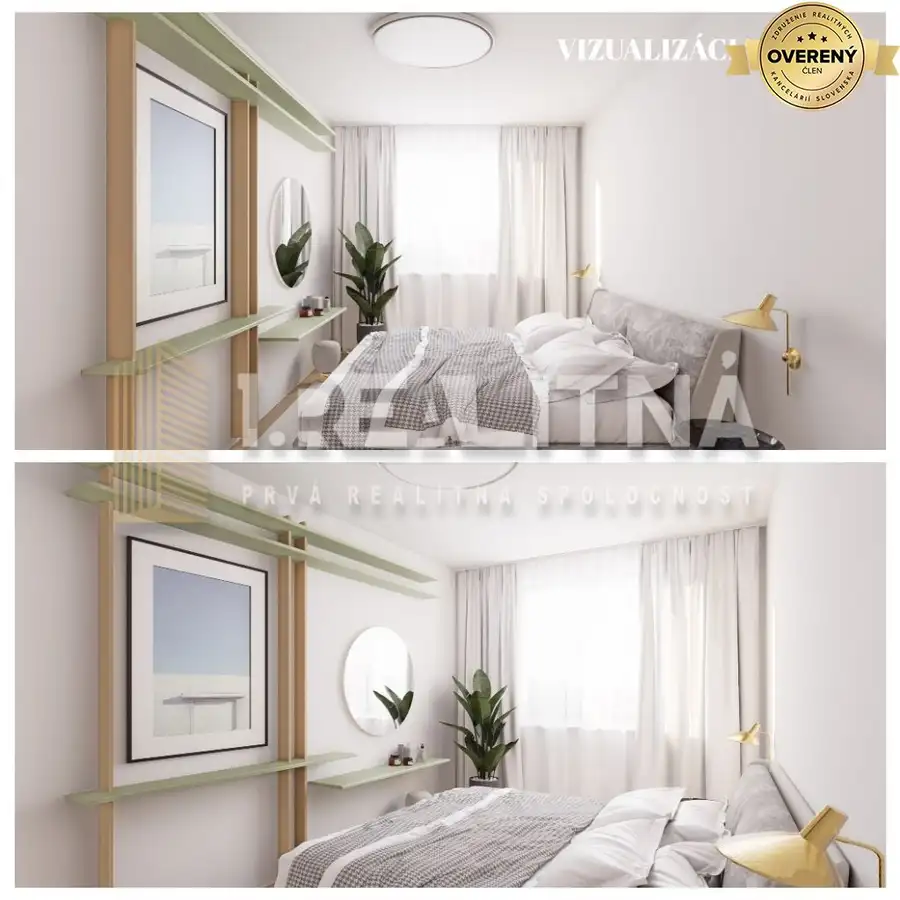

4 IZBOVÝ BYT S LOGGIOU, PAVLA HOROVA, 82 M2
Devínska Nová Ves, Bratislava









- Dispozícia4-izbový
- Plocha82 m²
- Poschodie2. z 7
- Stavpôvodný
O nehnuteľnosti
Ponúkame Vám exkluzívne na predaj nadštandardne priestranný 4 izbový byt o výmere 82 m² na ulici Pavla Horova v Devínskej Novej Vsi, situovaný na 2. poschodí zo 7. Byt je v pôvodnom, vypratanom, predpripravenom stave, čo predstavuje ideálnu príležitosť pre nového majiteľa vytvoriť si bývanie presne podľa vlastných predstáv. Veľkorysá výmera a praktická dispozícia radia túto nehnuteľnosť medzi výnimočné ponuky vhodné najmä pre rodiny. Benefitom je aj loggia a pivnica, ktoré zvyšujú komfort bývania.
Byt pozostáva z priestrannej vstupnej chodby, troch samostatných nepriechodných izieb, ďalšej obývacej izby prepojenej priečkou s kuchyňou s loggiou a kúpeľne s WC. Orientácia bytu je ideálna – denná časť (pracovňa, obývacia izba a kuchyňa) je orientovaná na juh, zatiaľ čo detská izba, spálňa na sever, čo zabezpečuje dostatok prirodzeného svetla počas celého dňa. K bytu prislúcha aj pivnica o výmere 1,25 m².
Videoprezentácia vizualizácie po rekonštrukcií:
Prečo si vybrať tento byt:
✔ nadštandardná výmera 82 m² (vrátane pivnice)
✔ 4 izby – ideálne pre rodinu
✔ loggia
✔ super dispozícia - kuchyňa vedľa obývacej izby
✔ výborná orientácia bytu
✔ možnosť rekonštrukcie podľa vlastných predstáv
✔ byt je vyprataný, omietky oškrabané, jadro vynesené - to Vám ušetrí ďalšie náklady pri prerábke
✔ vyhľadávaná lokalita
✔ kompletná občianska vybavenosť v pešej dostupnosti
✔ nové spoločné priestory, vchodové dvere, schránky, sanita, dlažba a výťah vo vchode (2026)
✔ nové stúpacie rozvody
✔ nové nepoužité plastové okná (apríl 2026)
✔ bezpečnostné dvere
✔ mesačné náklady 250Eur + el. + plyn
Devínska Nová Ves je obľúbená mestská časť Bratislavy, ktorá ponúka ideálne spojenie pokojného bývania s výbornou dostupnosťou do centra mesta. Vyniká množstvom zelene, blízkosťou prírody a cyklotrás popri rieke Morava, vďaka čomu je skvelou voľbou pre rodiny aj milovníkov aktívneho oddychu. Lokalita disponuje kompletnou občianskou vybavenosťou vrátane škôl, škôlok, obchodov, zdravotníckych zariadení či športovísk a zároveň ponúka rýchly prístup k nákupnému centru Bory aj diaľničnému obchvatu. Pokojná atmosféra, kvalitné zázemie a neustály rozvoj robia z Devínskej Novej Vsi jednu z najvyhľadávanejších lokalít na bývanie v Bratislave.
Parametre
- Úžitková plocha
- 82 m²
- Poschodie
- 2/vyššie poschodie
- Počet poschodí
- 7
- Stav
- pôvodný
- Status
- aktívne
- Postavené z
- panel
- Energetický certifikát
- nie
- Dátum zverejnenia
- 2026-08-19
Kde to je
Mohlo by Vás zaujímať
 Nebytové priestoryNové
999 999 999 €Priemyselný areál (tri haly, recepcia, kancelária, garáže, logistika)
Banská Bystrica
1260 m²1. podlažie
Nebytové priestoryNové
999 999 999 €Priemyselný areál (tri haly, recepcia, kancelária, garáže, logistika)
Banská Bystrica
1260 m²1. podlažie
 BytNové
139 990 €NA PREDAJ 3 IZBOVÝ BYT 75M2, ZVOLEN ZÁPAD (REZERVOVANÉ)
Zvolen
3-izbový75.17 m²8. podlažie
BytNové
139 990 €NA PREDAJ 3 IZBOVÝ BYT 75M2, ZVOLEN ZÁPAD (REZERVOVANÉ)
Zvolen
3-izbový75.17 m²8. podlažie
 BytNové
310 000 €Moderný 3-izbový mezonet v novostavbe rodinného domu
Podunajské Biskupice, Bratislava
3-izbový68 m²
BytNové
310 000 €Moderný 3-izbový mezonet v novostavbe rodinného domu
Podunajské Biskupice, Bratislava
3-izbový68 m²